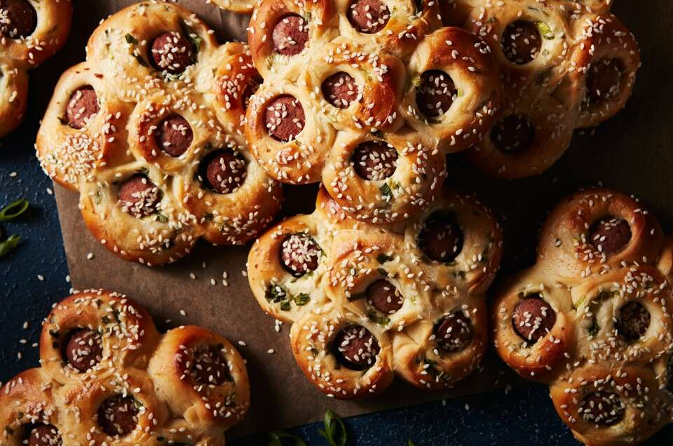

Asian Bakery Rolls

Description
These beautiful, flower-shaped hot dog buns are something to be revered. Recipe developer Betty Liu describes the Chinese bakery classic, which comes in a variety of shapes, as “hot dogs cocooned in the softest bread — a meal in itself.” Scallions are rolled in with the bread, so each bite has the fragrance and punch of alliums. The sesame coating provides crunch and a nutty flavor that’s right at home in these sweet and savory buns.
Prep: 30 mins | Bake: 22 to 25 mins | Total: 3 hrs
Yield: 8 buns
Ingredients
Tangzhong
- 43g water
- 43g milk, whole preferred
- 14g unbleached bread flour
Dough
- 113g milk, whole preferred; cold
- 300g unbleached bread flour
- 14g nonfat dry milk
- 50g granulated sugar
- 6g salt
- 1 tbsp instant yeast
- 1 large egg
- 57g unsalted butter, melted
*Cold milk will help cool down the tangzhong and bring the dough to a slightly warm temperature.
Buns
- eight 6" hot dogs
- 4 scallions, finely chopped
Topping
- 1 large egg, beaten with 1 tbsp of water (egg wash)
- sesame seeds
Steps
- To make the tangzhong: Combine all of the ingredients in a small saucepan, and whisk until no lumps remain.
- Place the saucepan over low heat and cook the mixture, whisking constantly, until thick and the whisk leaves lines on the bottom of the pan, about 3 to 5 minutes.
- Transfer the tangzhong to a large mixing bowl or the bowl of a stand mixer.
- To make the dough:Pour the cold milk over the tangzhong to help it cool to lukewarm.
- Weigh your flour; or measure it by gently spooning it into a cup, then sweeping off any excess. Add the flour and remaining dough ingredients to the bowl with the tangzhong, then mix and knead — by mixer or bread machine — until a smooth, elastic dough forms; this could take almost 15 minutes in a stand mixer.
- Shape the dough into a ball, and let it rest in a lightly greased bowl, covered, for 60 to 90 minutes, until puffy but not necessarily doubled in bulk.
- Gently deflate the dough and divide it into 8 equal pieces, about 85g each. Line 2 baking sheets with parchment.
- To shape the buns: a lightly floured surface, use a rolling pin to roll out each piece out into a rough 6" square. Sprinkle the surface with scallions. Place the hot dog on one edge, then roll it up in the dough. Set aside. Repeat with remaining dough and hot dogs.
- With a knife, cut each hot dog roll into six 1" pieces. Turn the pieces so the cut side of the hot dog is facing up and nestle each piece against each other to form a flower shape (one circle in the center, with five circles surrounding it). Set on the prepared baking sheet, cover, and let rise for 40 to 50 minutes, until puffy.
- Towards the end of rising time, preheat oven to 350°F.
- To bake the buns: Brush the buns with egg wash and sprinkle generously with sesame seeds.
- Bake for 22 to 25 minutes, until golden brown on top.
- Transfer to a rack when cool enough to handle. Serve warm or at room temperature.
- Storage Information:Store any leftover buns, well wrapped, in the refrigerator for several days.
home